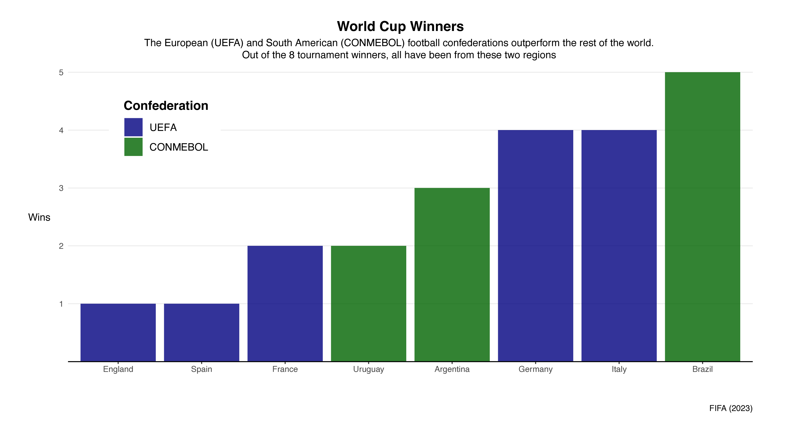

THE BEAUTIFUL GAME
Data 1500 Final Project By: Herbert Gaxiola Lopez
Football (soccer) has historically been one of humanities favorite pasttimes. Every four years, the world stops to watch the most talented players
compete for the chance to achieve the dream of the millions watching them from their home country: winning the World Cup. This is considered the most
prestigious team trophy in professional football, as well as one of the most celebrated sporting accomplishments in the entire world.
Only 8 countries have been able to lift the World Cup: Brazil (5x), Germany (4x), Italy (4x), Argentina (3x), Uruguay (2x), France (2x), and Spain (1x),
and England (1x).
These countries also all happen to be from the same two geographic regions: South America and Europe. This project will explore this topic, and put into
perspective the differences in success around the world.
Football's Popularity

Before starting this project, I made the confident assumption that football was the most popular sport in the world. Upon further investigation and the gathering
of data, I concluded that football is quite easily the most popular (played, spectated) sport in the world (Bleacher Report). After gathering my data, I found it
useful to visualize this information on a map that would show two things: countries whose most popular sport is Football, and the rest of the countries. Initially,
this map included the several other sports that were globally relevant, cricket and baseball to name two of the most popular, but the popularity of football makes
the rest of the sports almost completely irrelevant.
You can learn more about Bleacher Report's sport popularity list here.
This brings us back to the overarching point: only 8 countries that are in blue have won a world cup. Almost the entire European, African, and South American continents
are in blue, yet not every country has seen similar success at the highest level. Let's look into this a bit closer.

Above, we see the countries that have managed to win a World Cup. Interestingly, most of these countries have won the competition more than once.
The world is full of soccer players and fans, but somehow we have only seen two continents produce world champions. Countries like China,
Russia, and Mexico have great populations but no international success. Looking at this through the footballing perspective, we need to break down a few things to
understand this project further.
The international scene is split into what FIFA calls confederations. These confederations are groups of countries that regularly compete against each other. These
are determined by geographic location. What are these confederations? There are six confederations: UEFA (Europe), OFC (Oceania), CONMEBOL (South America),
CONCACAF (North America), CAF (Africa), and the AFC (Asia). Even when splitting countries up by confederations, there are only two confederations that have world
cup winners: UEFA and CONMEBOL (European teams have won the World cup a total of 12 times, while South American teams have won it 10 times).
Check out the history of world cup winners here.
Regional Differences

The graphic above breaks down the official FIFA rankings by region, or confederation. The FIFA ranking is a live points system based on performance and it has been active
for a couple of decades now. These point totals are basically a sum of how well teams have performed.
To produce this graphic, I sourced the most
recent FIFA rankings, and sorted them
by Confedereation. What we are seeing here is a representation of the Points Average by confederation. The x-axis represents the total points while the y-axis represents
the categorical sorting by confederation. The dark black line on each category represents the average points by confederation. The overall finding is that CONMEBOL, or
South America, has the highest points average, followed by UEFA (Europe). Again, the trend of these two being dominant regions remains.
Some closer findings are that UEFA has a much larger set: we see the lowest ranked country belonging to UEFA, but also the bulk of high performing countries also
existing in this region. CONMEBOL has a much smaller set, but has the highest ranked country, and a much smaller range compared to other confederations.
Here are the FIFA rankings.
History

When looking at the age of the oldest club in each country that has played in a world cup, we get a better understanding of this
phenomenon. In this graphic, we see the oldest club by country arranged in order by year established. In addition, we see that each country is colored by
their respective confederation. The majority of South American and European countries had their first clubs established before 1900s. The earliest
countries to establish a club are Scotland, England, and Ireland: all countries that make up or once were a part of the UK. We see a few countries from other
confederations sneak into the early stages: Peru, USA, Argentina, Canada, and New Zealand to name a few of the earliest ones. These are all countries that were either
colonized by England or saw large populations of English migrants. England is where football was created.
Other findings include that the majority of Asian and African clubs were founded after 1900, with the UAE, South Korea, and Angola being some of the later countries
to found a football club.
You can learn more about the history of football clubs here.
So How Has the World Performed Differently?

Looking at how every country has performed in the world cup, we again see two geographic regions being clearly dominant: Eastern South America, and Western Europe,
with the successful countries even neighboring each other. Many Asian and African countries have not even qualified for the tournament, and no countries from
these regions have ever won or gotten close to winning the competition.
Many countries in Central America have also not qualiifed, and the majority of North/ Central American countries have not performed well, despite football being
quite popular in the majority of these couuntries.
Here is a more in depth look at each country's best results.
Conclusions
I was interested in this topic because I have grown up knowing that football was a huge part of Mexican culture, yet Mexican football is not respected. Yes,
we as a country bring a love for the sport that not many countries are known for, but we haven't even been close to winning a world cup. After putting together
this project, it's still so hard to conclude why some countries don't perform well.
It is much deeper than regional and popularity factors. Maybe the colonial impact
of Europe on South America provided some sort of platform for South American countries to succeed, but then why are there only a handful of winners? There could possibly
be infrastructural influences or some sort of system that pushes athletes to higher levels, but this is very difficult to measure. The answer to this phenomenon would take
more research and analysis, but this is a starting point to coming to a more satisfying answer.